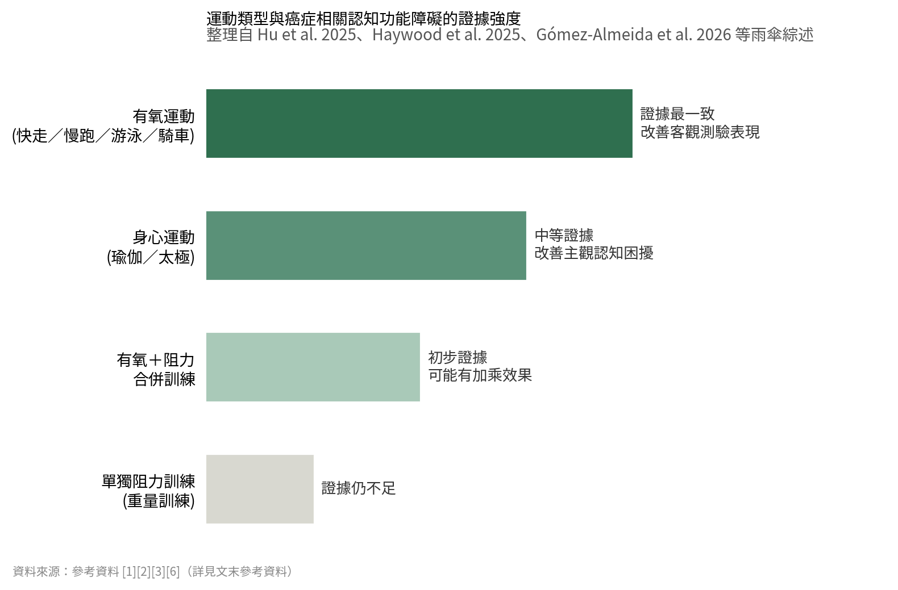

化療腦，運動幫得上多少忙
三篇獨立完成的雨傘綜述加上一項第三期隨機試驗：有氧運動的證據最一致，單獨的阻力訓練還撐不起認知獲益。
「腦子好像蒙上一層霧」不是主觀錯覺，它會反映在記憶、專注、處理速度與執行功能的測驗上。能給病人的選項一直很少：藥物證據薄弱，認知訓練需要專業人力。運動是每個人都能立刻開始的那一項，只是「怎麼做才有實證支持」，長期沒有人整理。
「開會開到一半突然忘記自己要講什麼」、「明明才看過的資料，轉頭就想不起放在哪裡」。不少正在接受化療、或已經完成治療的癌友，都曾用「腦子好像蒙上一層霧」來形容治療後的認知變化。醫學上稱這種現象為癌症相關認知功能障礙（cancer-related cognitive impairment, CRCI），民間更常用「化療腦」（chemo brain）來稱呼它。它不只是一種主觀的疲勞感，而是會實際反映在記憶力、專注力、處理速度與執行功能等多項認知測驗表現上的改變，進而影響病人重返職場、照顧家庭與生活品質的能力。
CRCI的成因相當複雜，化療藥物本身的神經毒性、荷爾蒙治療、放射線、癌症本身引發的發炎反應，再加上治療過程中常見的疲憊、失眠與情緒壓力，都可能共同促成認知功能的下滑。長久以來，臨床上能提供給病人的處理選項並不多：藥物治療（例如中樞神經興奮劑）證據薄弱，也未必適合所有病人；認知訓練雖然有一定效果，卻需要專業人力與病人持續配合才能執行。也因此，「運動能不能改善化療腦」這個看似簡單的問題，近十年來一直是腫瘤支持性照護領域最受關注的研究方向之一。2025到2026年間接連發表的幾份大型統合分析，終於讓答案愈來愈清晰。這也是為什麼這則消息值得癌友與家屬多花幾分鐘認識清楚：它談的不是又一種要價不菲的新藥，而是每個人幾乎都能立刻著手嘗試的生活調整，只是「怎麼做才有實證支持」，長期以來一直缺乏整理。
促成這波關注的其中一篇關鍵文獻，是2025年8月發表於《美國物理醫學與復健期刊》(American Journal of Physical Medicine & Rehabilitation）的一篇「雨傘綜述」（umbrella review）。這是實證等級較高的研究設計之一，做法是把「一整批」系統性回顧再重新整合分析一次。這篇由胡辰（Chen Hu）等人執行的研究，總共納入了28篇系統性回顧[1]，結果顯示有氧運動能顯著改善特定神經心理測驗的表現，尤其是處理速度與執行功能；強調身心連結的「身心運動」如瑜伽、太極，則對病人主觀感受到的認知困擾特別有幫助；若把有氧與阻力訓練合併執行，可能有加乘效果。比較讓人意外的是，單獨的阻力訓練（重量訓練）目前仍缺乏足夠高品質證據支持它對認知功能有直接助益。
這個結論並非單一研究的孤例。同一年稍晚，發表於《支持性癌症照護》(Supportive Care in Cancer)期刊、可公開閱讀的一篇綜述，範圍拉得更大：它彙整了64篇系統性回顧、涵蓋318篇原始研究、超過三萬名癌症病人的資料[2]，同樣發現運動對病人自陳的認知功能有小幅但具統計意義的改善，效果又以處理速度與工作記憶最明顯，只是不同研究間的落差仍然很大。緊接著在2026年5月，西班牙團隊發表於《心理腫瘤學》(Psycho-Oncology)的另一篇雨傘綜述，再度印證同樣的方向：這次分析了8篇系統性回顧、80篇原始研究，共7,536名癌症病人的資料[3]，結果一樣指向規律有氧運動與病人自覺記憶力、專注力及執行功能的提升有關。台灣的醫療媒體「照護線上」也在同年6月引用這篇研究進行報導[4]，建議以12週、中等強度的有氧運動（如快走、慢跑、游泳、騎車）作為切入點。
如果說前面三篇統合分析回答的是「運動有沒有用」，那2026年3月刊登於《美國國家癌症資訊網雜誌》(Journal of the National Comprehensive Cancer Network, JNCCN)的一篇第三期、多中心隨機分派試驗，則提供了目前少見的高品質「因果」證據[5]。這項研究由美國羅徹斯特大學醫學中心Wilmot癌症研究所的Karen Mustian與林伯儒（Po-Ju Lin）團隊主導，在全美20個社區腫瘤科診所收案687名病人，多數為乳癌患者，比較「居家個人化運動處方」（EXCAP，結合步行與彈力帶阻力訓練）搭配化療，與單純接受化療的差異。結果顯示，採用兩週一次化療週期的病人中，執行運動處方組別的認知功能下滑幅度、主觀認知困擾與心理疲憊感都明顯低於對照組；對照組病人的每日步行量在治療期間平均減少了53%，運動組則大致維持原有活動量。研究團隊之一的Mustian直言，照顧癌症病人的醫療團隊應該考慮把居家運動處方常規納入化療期間的支持性照護。不過必須說明，這是一組收案於2009至2014年、近期才完整發表分析結果的資料，且對三到四週化療週期的病人效果並不明顯，解讀時仍需保留一定彈性，不宜過度延伸為「所有癌友都適用」。

[1][2][3][6] 綜合繪製）" loading="lazy">當然，證據也不是全然一片樂觀。2025年發表於開放取用期刊《Cancers》的一篇網絡統合分析，比較了18篇研究、共1,100名病人的資料後發現，在所有非藥物介入方式中，由治療師帶領的團體認知復健課程（結合病人衛教與認知訓練）整體排名其實優於單純運動[6]。也就是說，運動是有幫助的選項之一，但不是唯一，也未必是最強的答案。而如果把時間拉回十年前，2016年考科藍實證醫學資料庫（Cochrane）針對癌症治療相關認知功能障礙的介入措施進行系統性回顧時，當時能找到的運動相關試驗只有5篇、共235名病人，證據品質偏低，結論是運動對認知功能的效果「仍不明確」[7]。對照十年後的今天，三篇各自獨立完成的雨傘綜述都指向類似方向，顯示這個領域的證據基礎確實比過去扎實不少，但距離「精準運動處方」仍有一段距離，各篇研究也不約而同呼籲，未來需要更多針對不同癌別、不同治療階段設計的高品質隨機分派試驗。
對正在治療中，或已經走過治療、仍然覺得自己「反應不像以前那麼快」的癌友來說，這些研究到底代表什麼?第一，目前證據支持度最一致的，是中等強度、規律執行的有氧運動，例如快走、健走、游泳、騎腳踏車，強度抓在會微喘、但仍能斷斷續續說話的程度，並不需要高強度訓練或特殊器材；第二，身心運動如瑜伽、太極、正念相關活動，對「主觀感覺記憶力變差、注意力不集中」的改善特別有感，即使客觀測驗分數變化不大，也值得作為日常調節的一環；第三，如果只做重量訓練而不搭配有氧，目前還不能期待它對認知功能有明確幫助。重量訓練仍該做，但理由主要是維持肌力、預防肌少症，而不是改善腦霧。
更重要的是安全上的提醒。這些研究談的都是輔助性的支持照護，不是治療癌症本身，也不能取代醫師開立的化療、標靶或荷爾蒙治療。如果原本就有嗜中性白血球低下、血小板低下、淋巴水腫、骨轉移、心臟功能異常或周邊神經病變等情況，運動強度與方式都需要先與腫瘤科團隊確認，不建議自行加重訓練量。另外，「認知變差」背後的原因很多元，貧血、甲狀腺功能異常、憂鬱情緒、藥物副作用，甚至腦部轉移都可能表現出類似症狀，運動不能取代這些必要的醫療評估。如果認知症狀是新出現或持續惡化，還是應該先讓醫師確認原因，而不是自行歸因為「化療腦」就跳過檢查；前述《Cancers》的網絡統合分析也提醒，若認知困擾已經明顯影響生活，由治療師帶領的正式認知復健課程證據等級其實高於單靠運動，兩者可以互補，不必二選一。
那麼，台灣的病人「用得到」這些發現嗎?答案相對正面：運動本身不是藥物或醫材，不需要通過台灣食品藥物管理署核准，也不受限於是否有本土臨床試驗，理論上任何一位病人在與醫療團隊確認安全性後，就可以開始執行。JNCCN試驗中使用的EXCAP方案，核心其實就是「居家步行加上彈力帶阻力訓練」，不需要特殊場地或昂貴器材；台灣癌症基金會等病友團體（canceraway.org.tw）也長期提供依癌別分類的復健運動衛教資源[8]，可作為起步時的參考。
至於健保給付的部分，則需要拆開來看，不能一概而論。運動本身沒有藥費或耗材成本，自然也就沒有「健保給不給付」的問題；真正牽涉健保的，是當病人需要由醫師轉介、在醫療院所執行正式物理治療或職能治療時。這類復健療程是否給付，取決於病人是否有明確的醫療適應症，例如手術後功能受限、淋巴水腫、嚴重肌少症等，並由醫師開立處方及診斷依規定申報，而不是以「改善化療腦」這個單一理由就能申請。換句話說，目前台灣健保並沒有針對「癌症相關認知功能障礙的運動處方」設有專屬給付項目；病人若想要更結構化、有專業人員指導的認知運動介入，多半仍需透過醫院自費的癌症復健門診，或病友團體提供的免費衛教課程與活動來補位。對病人來說，這或許反而是好消息：不必等待健保給付政策鬆綁，現在就能在與醫療團隊確認安全性之後，從「今天多走十五分鐘」這樣具體而微小的行動開始。長期來看，隨著愈來愈多高品質證據累積，是否會出現專屬的癌症認知復健給付規範，值得持續關注，但這不該成為現在延後行動的理由。
幾件事要一起看。第一，證據最一致的是中等強度、規律的有氧運動——會微喘但還能斷斷續續說話的程度，不需要器材；瑜伽、太極這類身心運動對主觀的腦霧感受特別有幫助；單獨的重量訓練目前還不能期待它改善認知，該做，但理由是維持肌力與預防肌少症。第二，運動不是最強的選項：2025 年一篇網絡統合分析裡，由治療師帶領的團體認知復健整體排名還在運動之上，兩者互補，不必二選一。第三也最重要，認知變差的原因很多——貧血、甲狀腺功能異常、憂鬱、藥物副作用，甚至腦轉移都可能長得像化療腦，新出現或持續惡化的症狀要先讓醫師找原因，不要自行歸因。有嗜中性白血球低下、血小板低下、淋巴水腫、骨轉移、心臟功能異常或周邊神經病變的人，運動強度與方式要先跟腫瘤科團隊確認。健保沒有針對「癌症相關認知功能障礙的運動處方」的專屬給付項目，但這件事本來就不必等給付。
參考資料
[1] Hu, C., Zheng, Y., Xing, S., Han, X., Gong, H., Wang, J., Yang, Y., & Lv, H. (2025). Exercise Interventions in Cancer-Related Cognitive Impairment: An Umbrella Review. American Journal of Physical Medicine & Rehabilitation. DOI: 10.1097/PHM.0000000000002848.
[2] Haywood, D., Henneghan, A. M., Chan, A., Chan, R. J., Dhillon, H. M., Lustberg, M. B., et al. (2025). The effect of non-pharmacological interventions on cognitive function in cancer: an overview of systematic reviews. Supportive Care in Cancer. DOI: 10.1007/s00520-025-09212-3.（開放取用，全文可於PMC閱讀）
[3] Gómez-Almeida, F., González-Devesa, D., Gacparski, C., Nombela, C., & Veiga, Ó. L. (2026). Effects of Exercise on Cancer-Related Cognitive Impairment: An Umbrella Review of Systematic Reviews and Meta-Analysis. Psycho-Oncology, 35(6). DOI: 10.1002/pon.70507.（開放取用）
[4] 照護線上（2026年6月2日）。罹癌後注意力不集中、記憶力變差？運動或許能幫上忙嗎？。careonline.com.tw。
[5] Mustian, K. M., Lin, P.-J., et al. (2026). Effects of Exercise on Cognitive Impairment in Patients Receiving Chemotherapy: A Multicenter Phase III Randomized Controlled Trial. JNCCN—Journal of the National Comprehensive Cancer Network, 24(3), 91–99. DOI: 10.6004/jnccn.2025.7118.
[6] Wolfe, D. M., Hamel, C., Berard, J., Veroniki, A. A., Skidmore, B., Kanji, S., et al. (2025). Comparative Effectiveness of Interventions to Treat Cancer Treatment-Related Cognitive Impairment in Adult Cancer Survivors Following Systemic Therapy: A Systematic Review with Network Meta-Analyses. Cancers, 17(21), 3430. DOI: 10.3390/cancers17213430.（開放取用）
[7] Treanor, C. J., McMenamin, U. C., O'Neill, R. F., Cardwell, C. R., Clarke, M. J., Cantwell, M. M., & Donnelly, M. (2016). Non-pharmacological interventions for cognitive impairment due to systemic cancer treatment. Cochrane Database of Systematic Reviews. DOI: 10.1002/14651858.CD011325.pub2.
[8] 台灣癌症基金會。復健運動衛教資源。canceraway.org.tw。
本文為一般性衛教說明，整理自公開發表的研究與官方公告，不能取代面對面的診療。研究結果適用的族群通常有嚴格條件，是否適用於你的情況，請與你的主治醫師討論。請勿依據本文自行調整、中斷或更換治療。
← 回到醫學新知